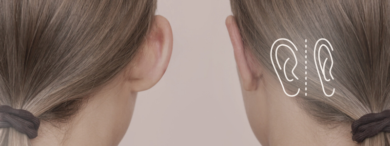

O que é?
A otoplastia, também conhecida como cirurgia de correção de orelha,
é um procedimento que visa corrigir assimetrias de forma, tamanho ou
posição das orelhas e, ainda, reconstruir orelhas mal formadas de nascença ou após um traumatismo.
O objetivo é alcançar um formato mais natural e harmonioso, proporcionando
um aumento da autoestima e confiança ao paciente.
Essa cirurgia pode ser feita em adultos, adolescentes e crianças, pois na faixa etária de 5 a 7 anos a orelha já está completamente formada.
Quando é indicada?
Essa modalidade cirúrgica é indicada para:
➡️ Corrigir a aparência de orelhas proeminentes ou "de abano";
➡️ Reduzir o tamanho das orelhas (macrotia);
➡️ Pacientes com laceração do lóbulo da orelha, microtia ou anotia (ausência congênita das orelhas);
➡️ Orelhas constritas (com aspecto de espremidas);
➡️ Corrigir deformidades congênitas ou causadas por traumas;
➡️ Melhorar a simetria e a proporção das orelhas em relação ao rosto;
➡️ Proporcionar um aspecto mais estético e natural às orelhas.
➡️ Aumentar a autoestima e a confiança do paciente.
Como funciona?
O procedimento geralmente envolve pequenas incisões na parte de trás da orelha,
onde as cicatrizes ficam menos visíveis. O cirurgião reposiciona ou remove o excesso
de cartilagem e pele, remodelando a orelha para alcançar o resultado desejado.
Em alguns casos, podem ser utilizadas técnicas minimamente invasivas com suturas para remodelar a cartilagem.
É uma correção definitiva?
Sim, a otoplastia é considerada uma correção definitiva.
Uma vez que as orelhas são reposicionadas e remodeladas, os resultados são permanentes.
No entanto, é importante ressaltar que o envelhecimento natural pode afetar a aparência das orelhas ao longo do tempo,
mas a correção realizada durante a cirurgia não se desfaz.
É fundamental seguir as orientações médicas para cuidados pós-operatórios e manter um estilo de vida saudável para preservar os resultados.
Cuidados pós-operatórios
➡️ Uso de curativo ou faixa elástica para proteger e manter as orelhas na posição correta;
➡️ Repouso e evitar atividades físicas intensas por algumas semanas;
➡️ Evitar dormir de lado nas primeiras semanas, para não pressionar as suturas e o local operado;
➡️ Evitar exposição ao sol e traumas na região das orelhas;
➡️ Evitar alimentos que contêm açúcar refinado e cigarros, pois prejudicam a cicatrização;
➡️ Manter a área limpa e seca, seguindo as orientações do médico para a limpeza das incisões;
➡️ Aplicar compressas frias para reduzir o inchaço e o desconforto, conforme orientação médica;
➡️ Evitar o uso de óculos ou acessórios que possam pressionar as orelhas nas primeiras semanas;
➡️ Seguir as orientações médicas para o uso de medicamentos e curativos;
➡️ Retorno ao médico para acompanhamento e avaliação da cicatrização.
Benefícios
A otoplastia oferece resultados significativos na correção da aparência das orelhas, proporcionando um aspecto mais natural e harmonioso.
Os benefícios incluem:
➡️ Melhora da autoestima e confiança do paciente;
➡️ Correção de deformidades e assimetrias;
➡️ Resultados duradouros;
➡️ Melhora da qualidade de vida e bem-estar emocional.
Quer orelhas mais harmônicas e proporcionais ao seu rosto?
A Otoplastia é a chave para um resultado natural e definitivo.
Invista na sua autoestima com um procedimento que traz alegria e
confiança para a sua vida.
 Agende seu horário
Agende seu horário